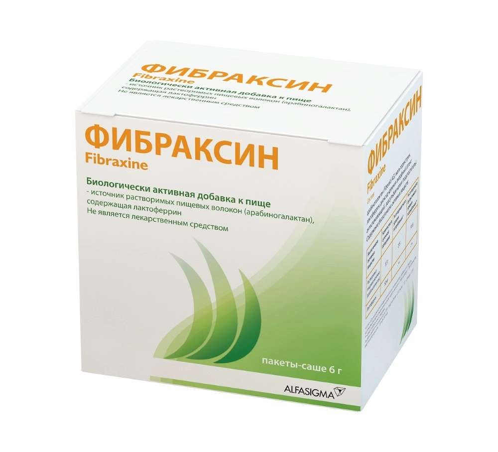

Офисное меню
Завтрак
{{OFFICE_BREAKFAST}}
Обед
{{OFFICE_LUNCH}}
Перекус
{{OFFICE_SNACK}}
Ужин
{{OFFICE_DINNER}}
Мы подобрали для вас примеры меню с калорийностью {{KCAL}} ккал в день. Такой уровень калорий помогает постепенно снижать вес и при этом сохранять комфорт в повседневной жизни.
Когда мы уменьшаем калорийность рациона, мы неизбежно уменьшаем и общий объём пищи. Это необходимо для снижения веса. Однако вместе с калориями организм начинает получать меньше важных питательных веществ и микроэлементов.
Даже если рацион выглядит сбалансированным, их количество часто оказывается ниже необходимого. Кроме того, на фоне изменений в питании усвоение микроэлементов может быть не таким эффективным.
Играют важную роль в работе кишечника и формировании чувства насыщения. Когда их становится меньше, могут появляться запоры, вздутие, ощущение, что вы не наедаетесь.
Необходимо для нормального уровня энергии и общего самочувствия. При его недостатке могут появляться слабость, головокружение, усиливается выпадение волос.
Эти состояния не всегда возникают сразу, но со временем они могут начать влиять на ваше самочувствие и на то, насколько комфортно вы переносите диету.

Фибраксин содержит синергично действующие компоненты:
Оказывает регулирующее действие на кишечную моторику, служит питательной средой для полезной кишечной микрофлоры и влияет на продукцию короткоцепочечных жирных кислот.
Способствует поддержанию нормальной функции кишечника и регуляции стула, а также оказывает поддержку при снижении веса и регуляции аппетита.
Участвует в регуляции обмена железа и помогает улучшать его усвоение в условиях, когда поступление железа с пищей снижено или затруднено.
Способствует защите от вирусов и болезнетворных микроорганизмов, поддержанию иммунитета.